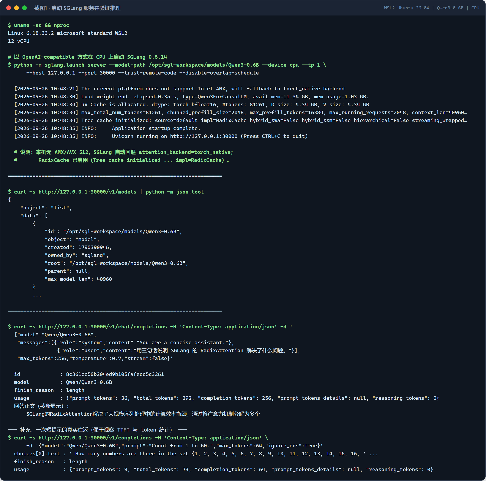
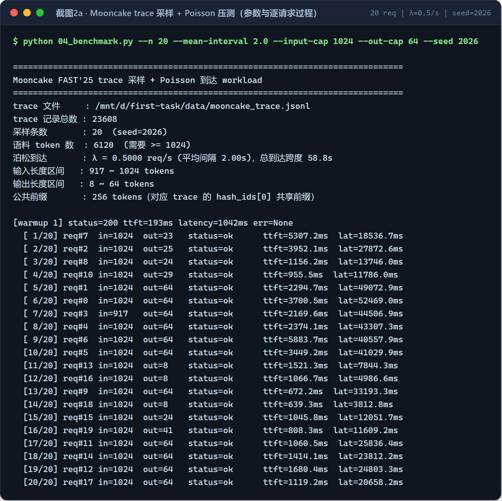
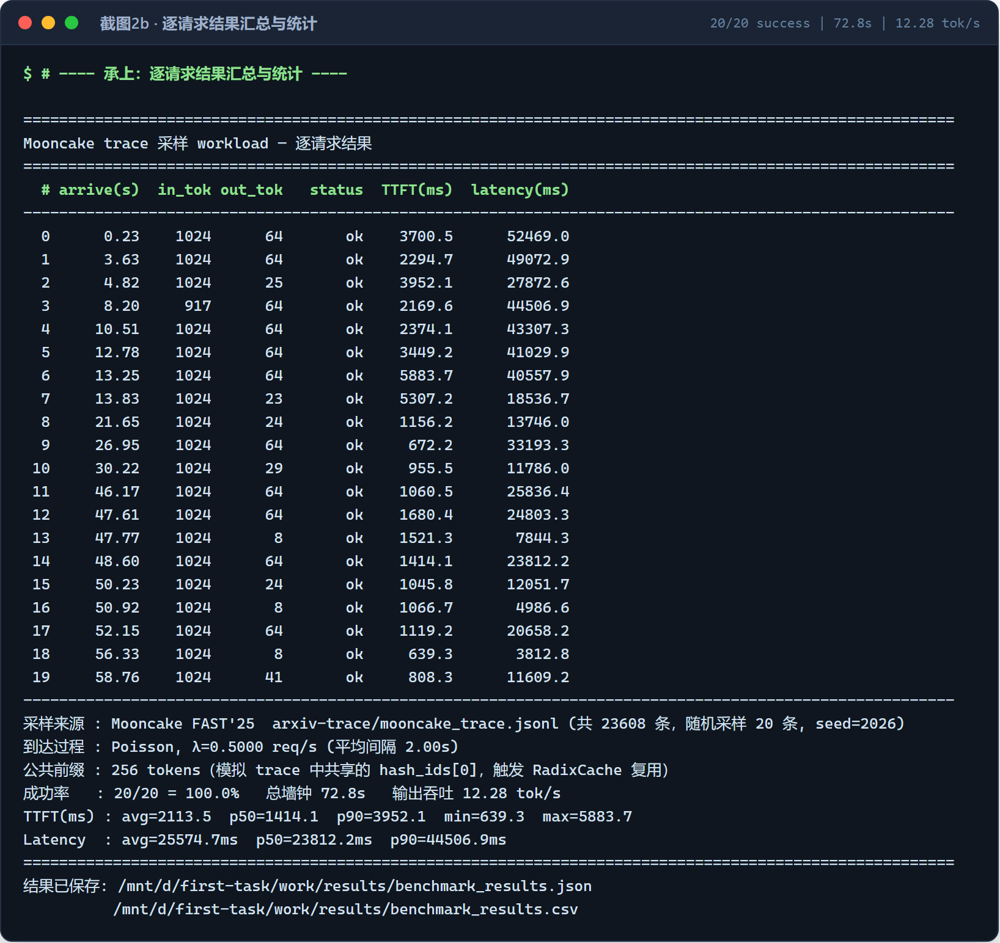
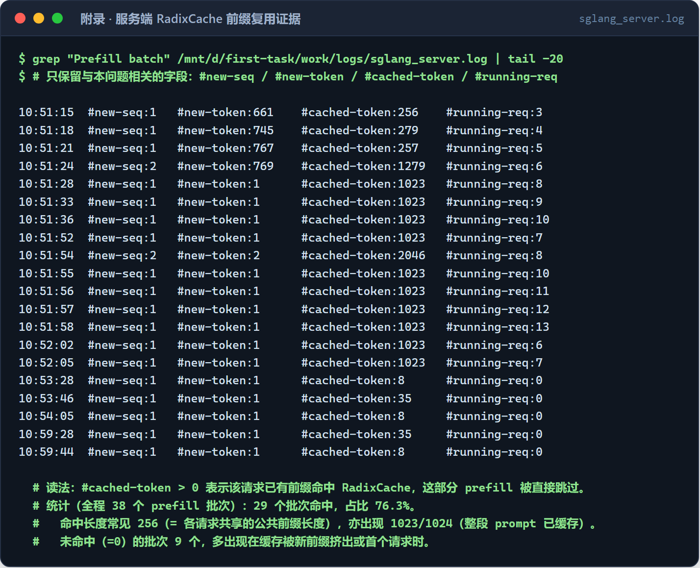

SGLang 在线推理服务挑战 · 服务启动、在线验证与 Mooncake 压测全过程的终端实录
在 WSL2 (Ubuntu 26.04) 中以 OpenAI-compatible 方式启动 SGLang，--device cpu --tp 1。
日志显示：平台不支持 Intel AMX 时自动回退 torch_native 后端；KV Cache 分配
81261 tokens（K/V 各 4.34 GB，bf16）；max_total_num_tokens=81261、
chunked_prefill_size=2048、max_prefill_tokens=16384、context_len=40960；
RadixCache 已初始化。随后 GET /v1/models 返回模型信息，
POST /v1/chat/completions 完成一次真实推理（prompt 36 tokens / completion 256 tokens，
达到 max_tokens=256 上限，finish_reason=length）。

从 mooncake_trace.jsonl（共 23608 条）随机采样 20 条，按每条记录的 input_length / output_length 构造 synthetic prompt；相邻到达间隔服从指数分布， 即严格的泊松到达过程（λ = 0.5 req/s，平均间隔 2.0 s）。逐条记录 input tokens / output tokens / status / TTFT / latency。

结果：成功率 20/20 = 100%，总墙钟 72.8 s，输出吞吐 12.28 tok/s， TTFT 均值 2113.5 ms（p50 1414.1 ms，p90 3952.1 ms），端到端时延均值 25574.7 ms（p50 23812.2 ms，p90 44506.9 ms）。

服务端 Prefill batch 日志中 #cached-token > 0 即表示该请求已有前缀命中 RadixCache、
对应的 prefill 计算被直接跳过。实验令所有压测请求共享 256 token 公共前缀
（对应 Mooncake trace 中普遍共享的 hash_ids[0]：该字段在 23608 条记录中
仅取 4 个不同值，最常见者占 46.3%）。全程 38 个 prefill 批次中有 29 个命中，
占比 76.3%；命中长度以 256（即共享前缀长度）与 1023/1024（整段 prompt 已被缓存）为主。
同时可见：大批次（#new-token ≥ 600，共 12 个）时服务端自报 prefill 输入吞吐为
214~423 tok/s；小批次的瞬时值受 1 秒时间粒度限制，不具参考意义。

evidence/ 目录。